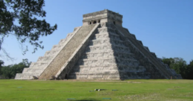

Quiz: Incas, Maias e Astecas
Curiosidades
- Incas: Construíram Machu Picchu, uma cidade inteira nas montanhas sem usar argamassa nas pedras.
- Maias: Desenvolveram um sistema avançado de escrita hieroglífica e eram grandes astrônomos.
- Astecas: Sua capital Tenochtitlán foi construída sobre um lago, com canais e pontes.

Incas - Machu Picchu

Maias - Chichén Itzá

Astecas - Templo Mayor